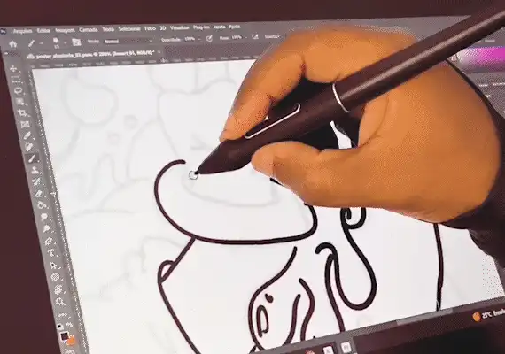
Ilustração 2D · Apparel & Print
Ilustração vetorial criada no Photoshop para a camiseta de formatura do 3º ano de uma escola local. Foco em estamparia e colorização.
Desenho a campanha inteira e escrevo o código que a entrega — com IA dentro do fluxo, não ao lado dele.
São Paulo - Brasil · disponível para trabalhar.
Treze anos de design. Comecei em direção de arte, passei por marca, campanha, produto e design system — e hoje faço as cinco na mesma entrega, com IA no meio do processo e o código saindo junto. Os três cases abaixo estão documentados de ponta a ponta, inclusive onde a IA não decidiu nada.
Marcas com que trabalhei
identidade, brandbook e sistema visual
conceito, peças e desdobramento por canal
UX, UI e fluxo até o handoff
tokens, variantes e estados documentados
HTML, CSS e JS escritos com IA e testados
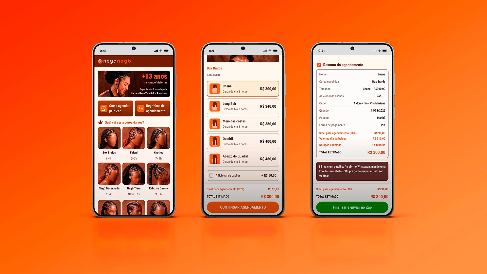
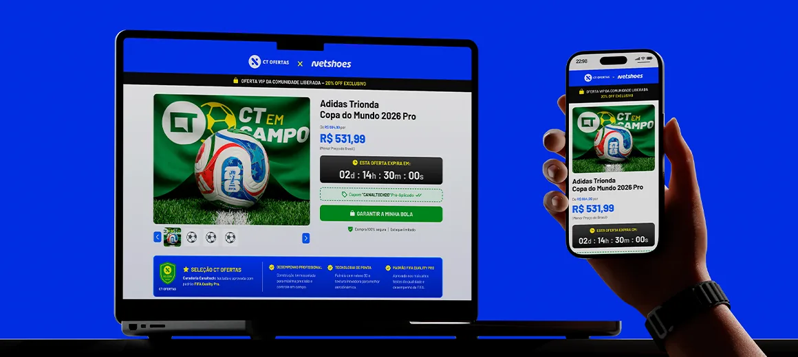
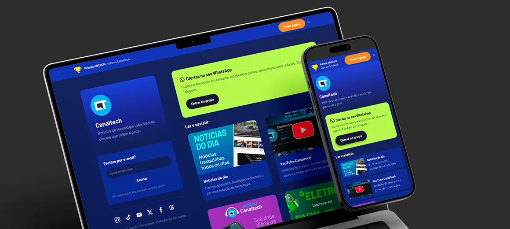
IA no fluxo
Ela move artefato entre etapas e executa o que já foi definido. Nos três cases eu documentei onde ela entrou, o que produziu e onde a decisão continuou sendo minha — com o método desenhado, não descrito.
Direção criativa escrita no Claude virou contrato visual. 46 imagens geradas no Higgsfield com Nano Banana 2 — e a coerência entre as treze fotos finais foi medida: 6,8° de amplitude de matiz no fundo.
Nenhuma foto de produto em contexto de Copa existia, e não havia verba nem prazo para produção. Dirigi as peças, gerei com IA e graduei à mão. Seis peças em dois dias.
O frame entrou por MCP, virou HTML testado por 176 asserções, e o design system saiu do código de volta para o Figma como dois boards 16:9.
O contrato do projeto, a direção de arte, a hierarquia da tela, os estados de interação e o que é fiel ou precisa ceder no código. Essas cinco decisões não saíram de prompt em nenhum dos três projetos — e cada case diz isso na própria página.
Playground
Testando limites entre o digital e o tátil. Do papel recortado à animação por inteligência artificial, o repertório que sustenta minha visão de design.

Ilustração vetorial criada no Photoshop para a camiseta de formatura do 3º ano de uma escola local. Foco em estamparia e colorização.
Short film experimental testando o pipeline completo de produção em IA. Geração de conceito com Nano Banana 2 e animação via Kling 3.0.
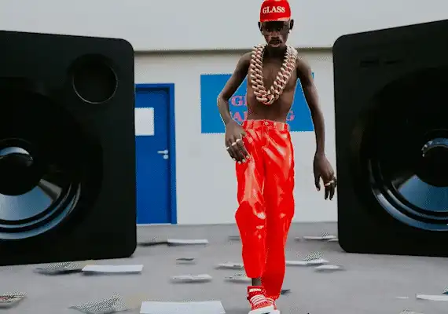
Estudo de estética e render 3D desenvolvido na Unreal Engine 5, inspirado na direção de arte do lançamento do álbum de Tyler, The Creator.
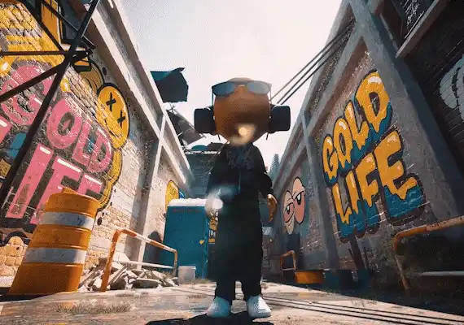
Animação 3D na Unreal Engine 5 para o lançamento da coleção Black Flag da Gold Life, destacando o vestir e o caimento do vestuário.
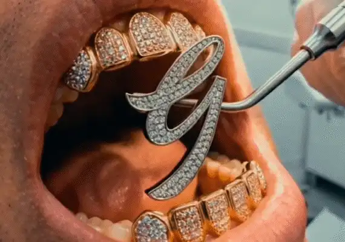
Storytelling de marca e exploração do logo via IA. Combinação de Nano Banana 2 e Kling 3.0 para criar narrativas visuais dinâmicas.
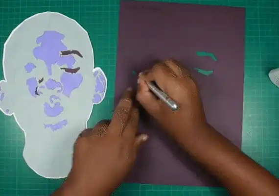
Quadro artesanal feito à mão com recorte em camadas de papel e estilete. Retrato do Will Smith em um estudo de volume e arte física.
Sobre
Comecei dominando a direção de arte e expandi para marca, campanhas, produtos digitais e design systems. Mas a grande virada da minha carreira foi aprender a alinhar a técnica ao impacto de negócio, trabalhando lado a lado com times multidisciplinares e lideranças estratégicas.
Hoje, entrego a visão completa: do conceito inicial ao código com IA, conectando estratégia, pessoas e eficiência operacional em cada projeto.
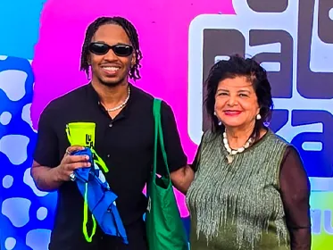
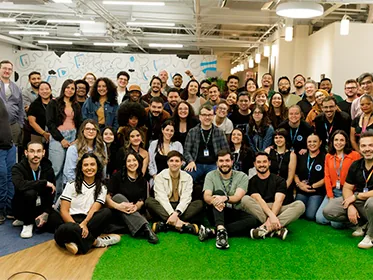
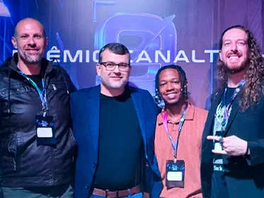
Disponível para trabalhar
Treze anos de design, cinco deles na Canaltech entre design system, marketing e comercial. Se você tem uma superfície que precisa sair pronta e medida, e não especificada, me chama.
© 2026 Erick Teixeira
oerickteixeira@gmail.com · São Paulo